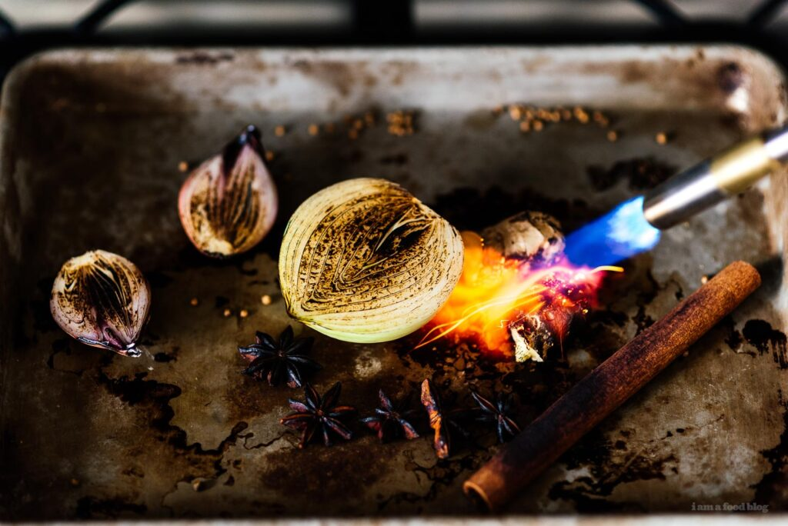
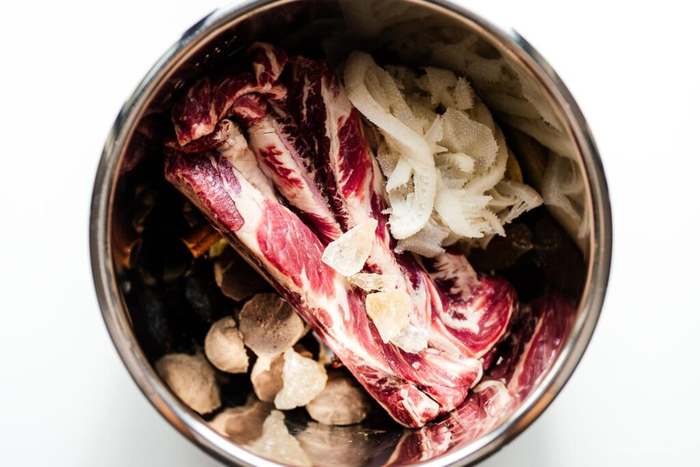
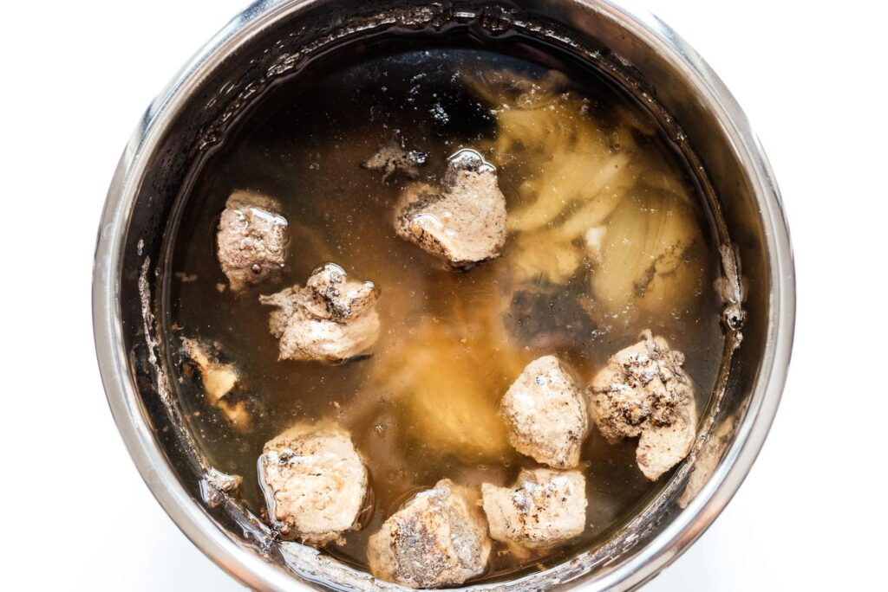
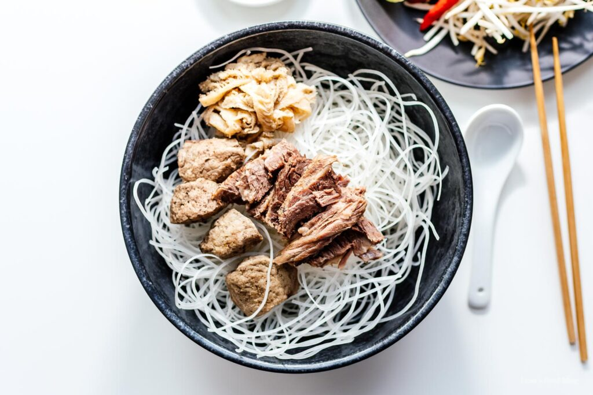
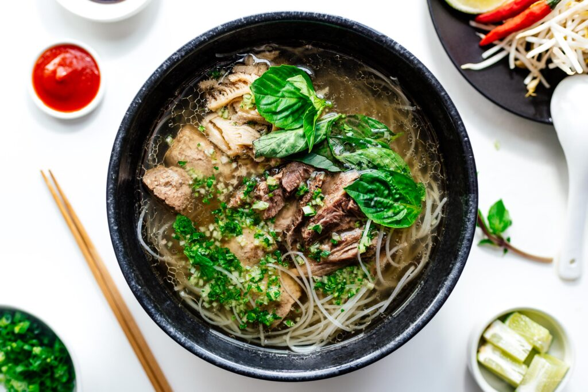

Authentic Pho Recipe
A pho recipe developed over decades from our Vietnamese family to yours
Prep Time
Cook Time
Total Time
5mins
55mins
1hr
Ingredients
Pho spieces and aromatics
- 5.83 star anise pods
- 1.17 cinnamon stick
- 1.17 tsp whole cloves
- 1.17 tsp coriander seeds
- 1.17 tsp peppercorns white preferred, black if not
- 1.17 tsp fennel optional
- 5.83 cardamom pods optional
- 0.58 medium onion peeled
- 2.33 inches ginger halved lengthwise
- 1.17 shallot peeled and halved
For the pho soup
- 2.33 lbs beef for soup see notes
- 3.5 inch daikon 1" slices, optional
- 4.67 qt water
- 2.33 oz rock sugar ~1/4 cup white sugar, or to taste
- 0.29 cup fish sauce or to taste
- 28 oz dried pho noodles or fresh, see notes
- 9.33 Vietnamese meatballs or more, cut in halves
- 1.17 lb sirloin roast thinly sliced
- 1.17 lb brisket or flank steak
- 0.58 lb tendon optional
- 0.58 lb omasum optional
To serve the pho
- 0.58 cup fresh cilantro roughly chopped
- 0.58 medium onion sliced
- 3.5 cups bean sprouts blanched if desired
- 1.17 lime cut into wedges
- 1.17 bunch Thai basil
- 1.17 jalapeño sliced
- sriracha
- hoisin sauce
Special Equipment
- Instant pot
Instructions
- Arrange the larger aromatics on a heat proof baking sheet and blow torch until fragrant.
Alternately, toast all aromatics in a cast iron pan on the stove or in the oven
broiler for a few minutes until fragrant.

To make the pho soup
- Transfer charred aromatics along with sugar and all meats except the sirloin to Instant
Pot/Pressure cooker. Fill to the max fill line with water, about 4 quarts. Set pressure to
high and cook time to 35 minutes and cook. Quick release the pressure when cooking
time is completed. See notes for stovetop instructions. - Once cool enough to taste, add fish sauce 1 tablespoon at a time until it’s just about overseasoned.
Add extra sugar if needed. If you go too far, just add water. You may
optionally strain the pho at this point to get as clear of a broth as possible.


To serve
- Warm your bowls with hot tap water, then drain. Bring a pot of water to a boil and
briefly blanch the noodles, then rinse with cold water and drain well. Divide noodles
evenly into each of the warmed bowls. Thinly slice the sirloin (if needed) and top each
bowl. Thickly chop all the other meats and divide evenly. - Cover with about 2 cups of hot broth per bowl and sprinkle chopped cilantro and
sliced onions over top. Serve with a plate of bean sprouts, limes, Thai basil, and
chilies. Have small dipping plates of sriracha and hoisin sauces for each person.


Notes
We used finger meat in this recipe but the choice of beef or bones is up to you. See the section on meats
for more details.
If you don’t have a pressure cooker, bring the beef to a boil along with enough water to cover for 5
mins, then drain and wash the pot. Add clean cold water and gently simmer the beef, tendons if using,
aromatics, and daikon for 4-6 hours. You can do this part in a crockpot as well. Try to maintain the same
level of water during the cooking process, checking back every 30 minutes or so. 2 hours before the
soup is finished, add the brisket. 20 minutes before serving, add meatballs and tripe.
While the nutrition information is as accurate as possible, it is only representative if you
consume all of the broth. It includes 1/2 of meat per bowl, which may be a lot more than you have if
you didn't go for the optional meats, and includes 1 tbsp of fat per bowl. If you go with 1 tsp of fat, it is
806 calories, and if you go with no fat, it is 773 calories per bowl.
Estimated Nutrition